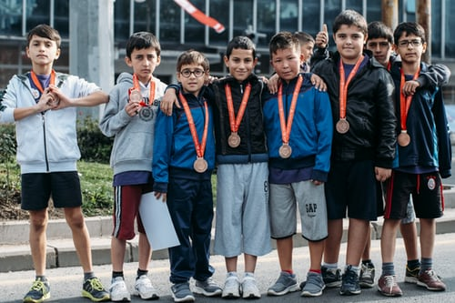
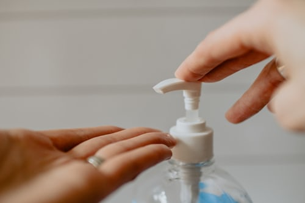

YONAS ASSEFA
| About | Blog | News | Books | Contact | Hire me |
#FTG schools gratuation programmeby Yonas on July 30, 2010, 0 comments  Hello there, am Yonas. here is to inform you my graduations ceremony when i was a kid. |
|
#AGPS graduation programmeby Yonas, on sep 18, 2018
Today,september 18, AGPS 2018 graguate its students who has took the national university enterance exam and promoted, and i was one of them |
|
#U.S. expands travel ban as pandemic alters daily life!by Yonas, on June 12, 2019  Hundreds of foreign passengers, including dozens of Americans, and Egyptians were potentially exposed to the virus between mid-February and early March — a dramatic illustration of how, from a single,overlooked infection, the novel coronavirus could swiftly multiply and be carried across the globe. |

Connect with me
please leave your comment if you think its important